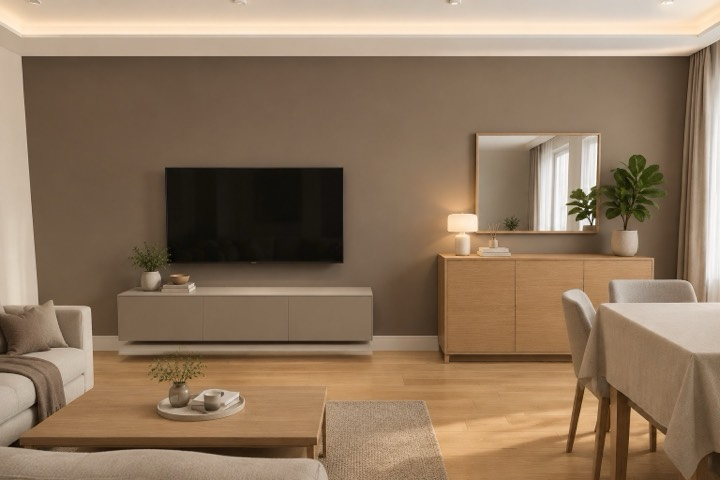

Что проверить в альбоме до того, как отдавать его бригаде, в каком порядке смотреть листы и как сформулировать правку так, чтобы её не пришлось объяснять второй раз.

Правка «что-то не так у окна» стоит недели. Правка на чертеже — минуты.
из этой статьиНе листайте альбом подряд — смотрите от общего к частному. Сначала планировка: план расстановки мебели и план демонтажа и монтажа — встаёт ли всё, что нужно, удобно ли ходить. Потом визуализации и развёртки: высоты, фронты мебели, где розетки и выключатели. Потом инженерия: розетки, свет, сантехника. И в конце — ведомости и смета. Правка в планировке меняет всё остальное, поэтому её выгоднее найти первой.
Пройдите по квартире мысленно утром и вечером. Где вы снимаете обувь и куда кладёте ключи. Хватает ли места открыть духовку, когда кто-то стоит у мойки. Открывается ли дверь шкафа полностью. Где сушится бельё. Хранение считайте по вещам, а не по метрам: пылесос, чемоданы, сезонная одежда, коляска. Если вещи некуда деть, она окажется на виду.
Визуализация показывает впечатление, развёртка — размеры. Смотрите их парой: в нашем альбоме для заказчика кадр стоит на листе развёртки той же стены. Проверьте высоту столешницы и верхних шкафов под ваш рост, розетки над столешницей, выключатели у входа — не за открытой дверью. Подробнее — в статье про развёртки.
Хорошая правка отвечает на три вопроса: где (лист, помещение, стена), что не так и как хочется. «Розетку у кровати поднять до 700 мм — тумба высокая» понятна с первого раза. «Что-то не так в спальне» — нет. Если не знаете, как правильно, — опишите, что мешает: «здесь неудобно открывать окно». Решение найдём мы.
Чтобы не описывать «где» словами, правка у нас ставится на сам чертёж: открываете лист на сайте, нажимаете на место — появляется метка, и вы говорите, что поменять. В PDF альбома для заказчика на каждом листе есть кнопка «Правка к этому листу» — она открывает тот же лист. Правки по всем листам собираются в один список и уходят одним сообщением. Попробовать можно на настоящем листе: план мебели квартиры 56 м².
Мы не рисуем поверх листа — правится проект, и альбом собирается заново. Поэтому правка в плане мебели сама переезжает на развёртки, в розетки, в спецификацию и смету. Если правка затрагивает несущую стену, перекрытие или газ, она уходит в реестр открытых вопросов: такие решения принимаются с конструктором и по документам.
Каждый круг — это перевыпуск альбома, а не ручная переделка листов, поэтому правки не копятся неделями. Удобнее собирать замечания пачкой: пройти альбом целиком и отправить список одним сообщением.
Да. Кнопка «Правка к этому листу» есть и на листах с визуализациями: если кадр показал не то — переснимаем.
Пусть оставит правку на том листе, о котором речь, или пришлёт фото. Если замечание по делу — исправим в проекте, и исправление попадёт во все связанные листы.
Размеры, фото, пожелания по стилю и бюджету. На время открытого тестирования проект делается бесплатно, предоплаты нет, альбом остаётся у вас в любом случае.
Автор проекта — дизайнер-архитектор Кырлан Александр. Его подпись и контакты стоят в основной надписи каждого листа.